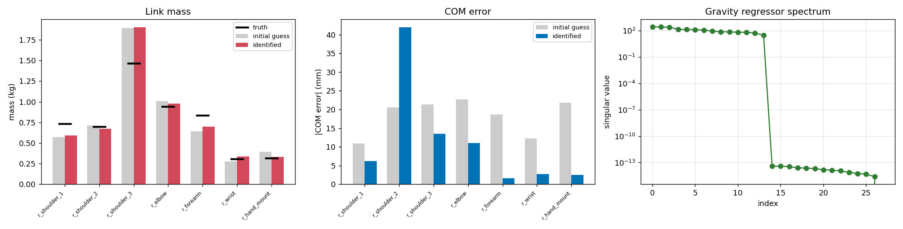

Four guides take you from an empty bench to a robot that moves: what to buy, how it goes together, how it is wired, and what to flash. Two are published; two are being written.
Each one stands alone, but this is the order they are meant to be read in. Buy it, build it, wire it, flash it.
The one rule that keeps MABEL honest. The MuJoCo model mabel_full.xml is the
single source of truth for the body. The ROS URDF, the web model, the iOS and Vision Pro rigs and the
tip-over constants are all generated from it — regenerate them after any geometry change, or they drift
apart silently.
You can do everything up to real hardware on a Mac alone — ROS 2 is only needed on the robot.
THE GOLDEN RULES
MABEL is a 62 kg machine with 400 N·m in its torso. Every safeguard below is real and lives in the code.
Any client sends estop; the bridge zeros all commands and latches stopped. A hardware E-stop de-energizes actuators independently of the host.
No fresh command in 0.3 s → drive zeros. Lose the Teensy heartbeat → controllers disable in ~150 ms.
A ZMP tip-over model bounds base speed/accel from the measured CoM. Self-collision avoidance (CBF-QP) keeps arms out of each other.
A single-driver lock means two operators can't fight. Lost hand tracking holds pose instead of extrapolating.
Five routines turn a pile of motors into a robot that matches its twin: swerve steer offsets, arm system-ID, motor friction/inertia, ORCA hand end-stops, and the whole-body CoM check.
Don't skip the CoM check after any mass change: wbc_stability.py --only 4. If E4 shows >1 cm bias, update the tip-over constants in config.py. This is what keeps MABEL from tipping.

The build guides stop at a robot that powers on and holds position. Everything past that lives on its own page.
ROS 2, the server and bridge, and the simulation twin you should prove every motion in first.
The safety gate every command passes through, the tip-over model, and the QP that keeps the arms out of each other.
Vision Pro, iPhone or browser — one wire contract, three clients, and the retargeting in between.
SLAM, costmaps and planning on the swerve base.
Collect demonstrations, curate them, train a policy, deploy it back onto the robot.
The live studios, the repo, and how to reach the people building it.
No. The full stack — teleop, control, learning — runs against the MuJoCo twin on a laptop.
Check the bus is up (./can_scan.sh), 1 Mbit, and 120 Ω terminated both ends.
They're identical — pinned by hub port. Keep both on one powered USB-3 hub at 640×480.
You edited the MJCF without regenerating the derived models. Re-run the §8 pipeline, in order.